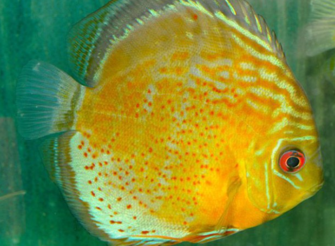
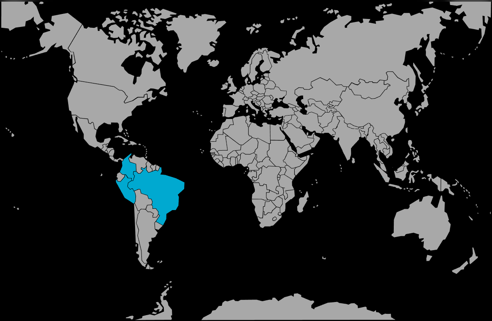

Systématique
- Ordre : Cichliformes
- Famille : Cichlidae
- Genre : Symphysodon
- Espèce : S. tarzoo

Symphysodon tarzoo est une espèce de cichlidé sud-américain originaire de l'ouest du bassin amazonien. Décrite initialement par Lyons en 1959, puis réhabilitée comme espèce distincte par Ready et al. en 2006, elle se différencie des autres membres du genre par des caractéristiques génétiques et morphologiques précises.
Le corps est typiquement discoïde et comprimé latéralement, atteignant une longueur standard d'environ 15 à 20 cm. Sa principale caractéristique visuelle, qui la distingue de S. aequifasciatus, est la présence de taches rouges ou brun-rouge (points rouges) bien définies sur les nageoires anale et dorsale, s'étendant souvent sur la partie inférieure du corps. Le fond de coloration varie du vert olive au bleu turquoise avec des stries horizontales irisées.
L'espèce possède neuf barres verticales sombres, la première traversant l'œil et la dernière le pédoncule caudal. Contrairement à S. discus, la cinquième barre n'est pas prédominante. Les données scientifiques soulignent que cette espèce est séparée des autres populations de Discus par l'arc de l'Amazone (Purus arch), limitant ainsi les échanges génétiques naturels.
Symphysodon tarzoo est une espèce grégaire qui vit en groupes hiérarchisés au sein de structures complexes. En milieu naturel, ces groupes se réfugient parmi les racines immergées et les branches d'arbres tombés pendant la journée, sortant dans des eaux légèrement plus ouvertes pour se nourrir à la tombée de la nuit.
C'est un poisson calme mais doté d'une sensibilité sociale élevée. La hiérarchie est maintenue par des parades visuelles et des pressions physiques légères. En captivité, un groupe de 6 à 8 individus minimum est essentiel pour diluer l'agressivité du dominant. Très sensible aux vibrations et aux changements brusques de luminosité, il nécessite un environnement stable et rassurant.
Mode : Ovipare, pondeur sur substrat vertical avec soins parentaux complexes.
Le couple choisit une surface verticale lisse (racine, feuille large ou tube en captivité). Après une parade nuptiale intense, la femelle dépose les œufs que le mâle fertilise immédiatement. Les deux parents ventilent la ponte et la défendent farouchement. L'éclosion survient en 50 à 60 heures.
La particularité biologique majeure du genre réside dans le nourrissage des alevins : les parents produisent un mucus nutritif sur leur peau. Les jeunes "broutent" ce mucus pendant les premières semaines de leur vie. Ce comportement est indispensable à la survie de la progéniture. Le passage du mucus à une alimentation externe se fait progressivement sur une dizaine de jours.
Dimorphisme sexuel : Très peu marqué. Les mâles matures ont parfois une taille légèrement supérieure et des nageoires dorsale et anale plus pointues. La distinction certaine ne peut être faite qu'au moment de la ponte par l'observation des papilles génitales (le spermiducte du mâle est pointu, l'oviducte de la femelle est arrondi).
Espérance de vie : 10 à 15 ans en conditions optimales de maintenance.
L'espèce peuple les "eaux noires" (Igapó) et parfois les "eaux claires" de l'Amazonie occidentale. Son habitat est caractérisé par une eau très acide, extrêmement pauvre en minéraux et riche en tanins provenant de la décomposition des matières organiques.
Elle se tient préférentiellement dans les zones encombrées de bois mort (galhadas) à des profondeurs variant entre 1,5 et 4 mètres. La température de ces biotopes est élevée et très stable. Le substrat est généralement composé de sable fin recouvert d'une épaisse couche de feuilles mortes.
Répartition

Origine naturelle :
- Amérique du Sud : Bassin de l'Amazone (partie occidentale).
- Brésil : Rio Purus, Rio Juruá, Rio Bauana, Rio Japura.
- Pérou et Colombie : Haut Amazone et affluents proches.
Cette espèce est géographiquement isolée des populations de l'est par l'arche de Purus, une barrière géologique ancienne.
Paramètres de maintenance
Température : 27 à 30 °C (supporte mal les baisses sous 26°C).
pH : 4,5 à 6,5 (eau très acide indispensable pour les spécimens sauvages).
GH : 1 à 5 °dGH (eau extrêmement douce).
Courant : Faible à modéré ; nécessite une filtration efficace mais sans remous excessifs.
Volume conseillé : Minimum 400-500 litres pour un groupe. Hauteur de bac de 60 cm préférable.
Régime alimentaire
Régime : Omnivore à tendance carnivore et détritivore.
Dans la nature, il consomme des invertébrés, des larves d'insectes, ainsi que du périphyton (biofilm sur les racines) et des matières végétales.
En aquarium, il nécessite une nourriture variée : artémias, mysis, vers de vase (avec parcimonie) et des granulés de haute qualité. Un apport végétal (spiruline) est recommandé.